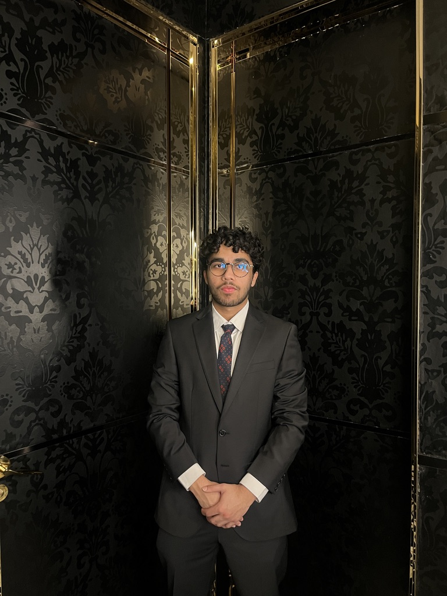

Welcome to My Resume
I am Ahmad Sadiq, a Computer Science student at Boston University, focusing on robotics software engineering, full-stack development, and AI-driven solutions. Explore my journey through my experiences, education, certifications, and projects.